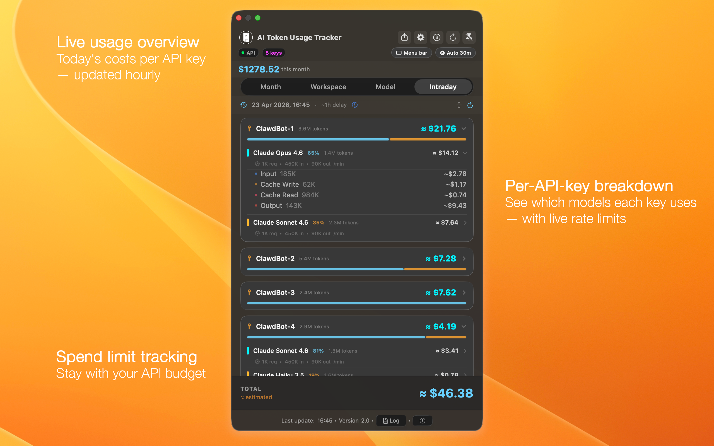
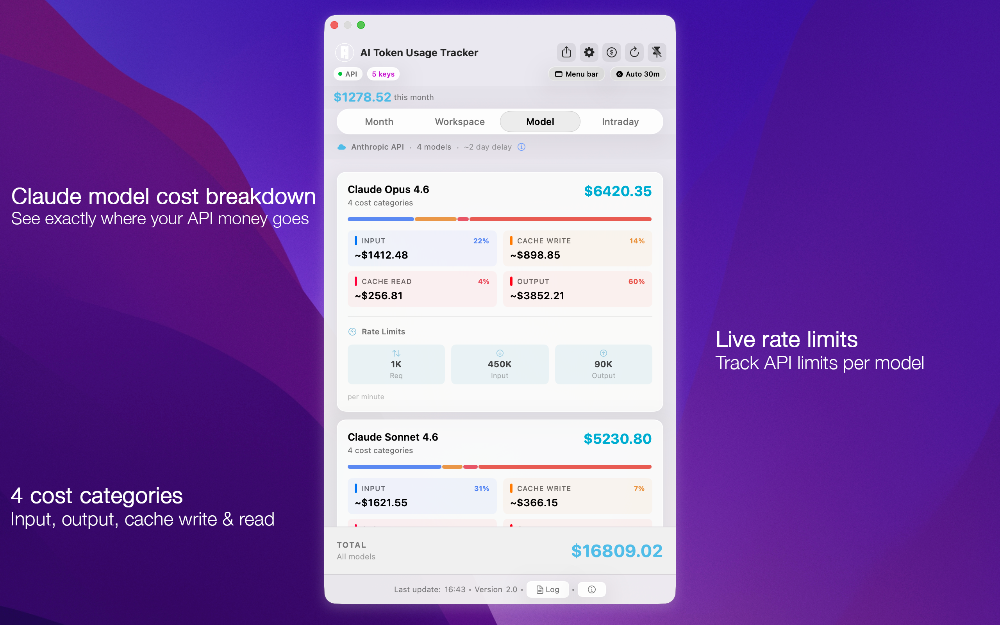
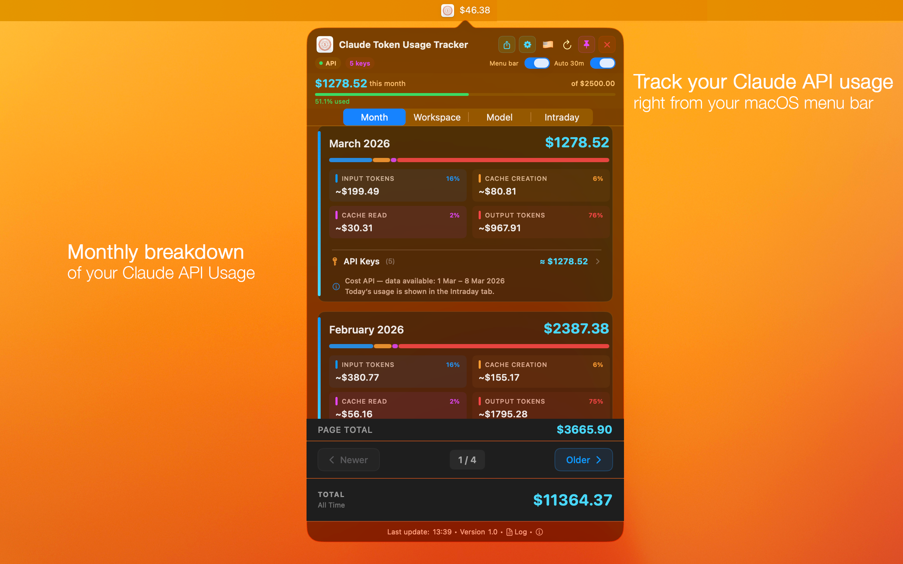
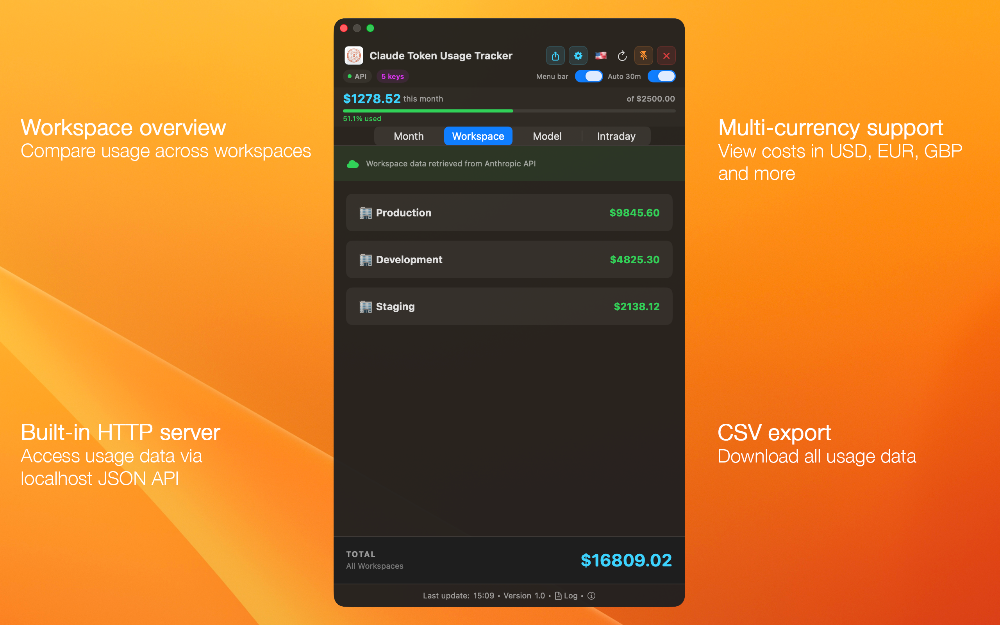
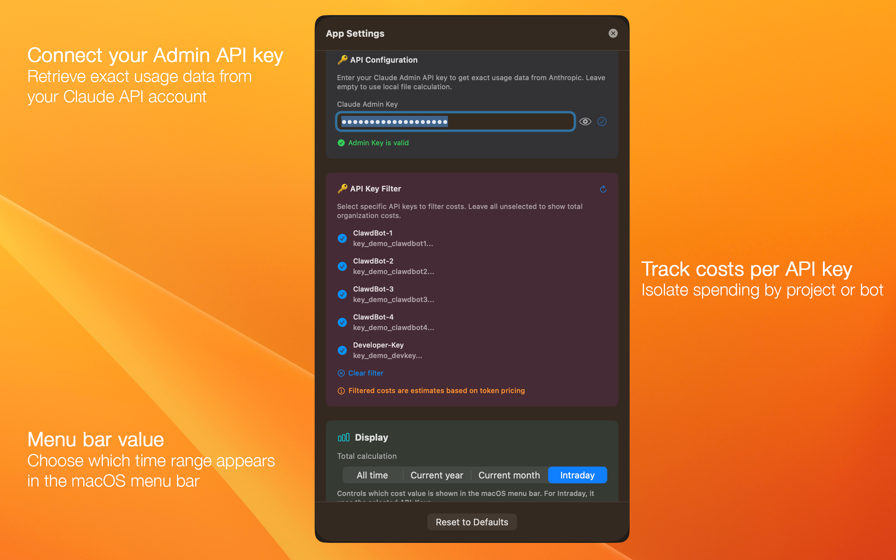
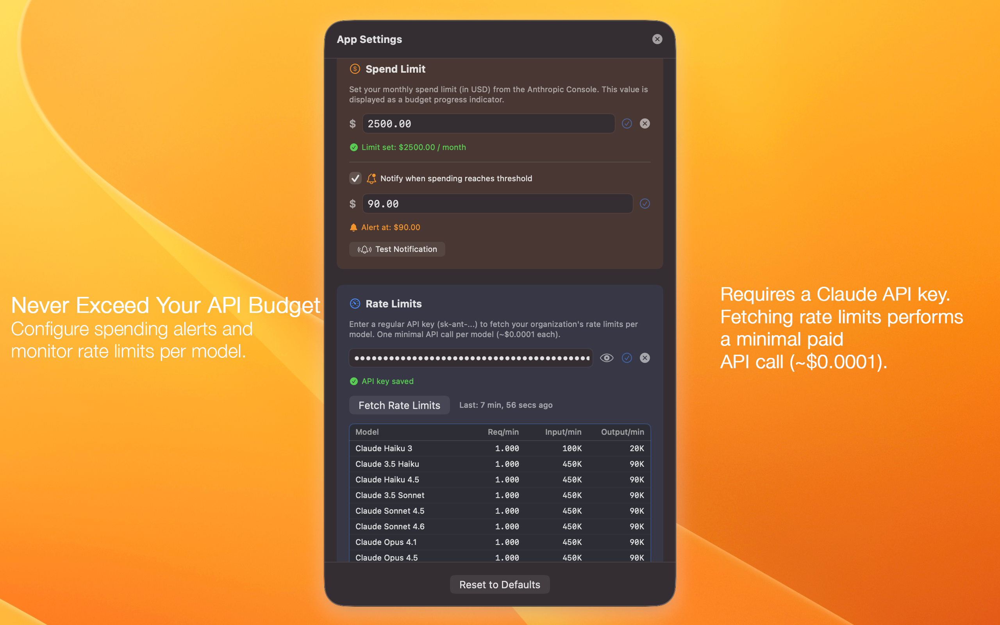
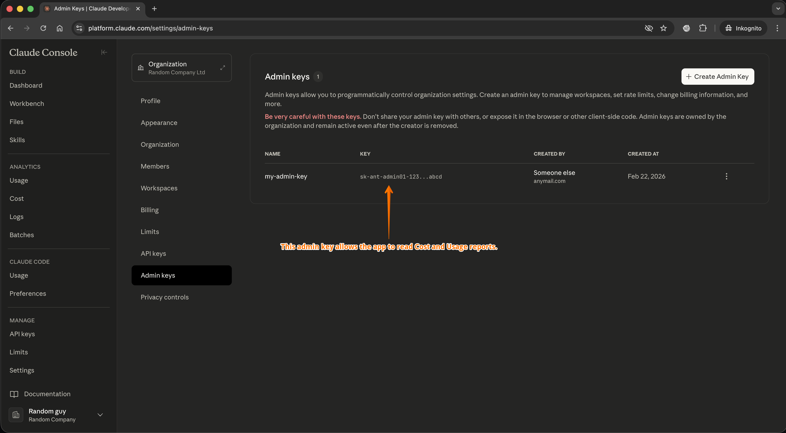

What It Does
A native macOS menu bar app that connects to the Anthropic Admin API and shows your organization's Claude API usage and costs — broken down by month, model, workspace, and API key. Built with Swift and SwiftUI, it runs entirely on Apple system frameworks with zero third-party dependencies. Your Admin API key is stored securely in the macOS Keychain.
Whether you're using Claude Code, Cursor, Windsurf, or calling the Anthropic API directly — this app gives you full visibility into what you're spending.
 Requires macOS 14.0 (Sonoma) · Free 7-day trial
Requires macOS 14.0 (Sonoma) · Free 7-day trial
Features
Click any feature to learn more.
Near Real-Time Cost Tracking
The Intraday tab shows today's API costs per key with approximately 1 hour delay from Anthropic's Usage API. Each API key is displayed as a card with per-model breakdown, color-coded cost distribution bars (Input, Cache Creation, Cache Read, Output), and estimated totals.
A dedicated refresh button lets you pull the latest intraday data independently from the rest of the app. If you've configured a spend limit, a combined progress bar shows your month-to-date cost plus today's estimate against your budget.
Monthly Cost Breakdown
The By Month tab shows paginated month cards (2 per page) with costs from Anthropic's Cost API — finalized dollar amounts with approximately 2 days of reporting lag. Each month card displays the total cost, a color-coded cost distribution bar, and a 2×2 grid showing per-category costs (Input, Cache Creation, Cache Read, Output) with percentages.
Pro users can expand each month to see a per-API-key breakdown — isolating exactly how much each project, bot, or team member spent. An all-time grand total appears at the bottom across all months.
Per-Model Cost View
The By Model tab lists every Claude model you've used — Claude Opus, Sonnet, and Haiku in all versions — sorted by version (newest first) and tier. Each model card shows total cost, a color-coded distribution bar, and a stat grid with the 4 cost categories (only those with actual usage).
If you've configured rate limits, each model also displays inline rate limit pills showing requests per minute, input tokens per minute, and output tokens per minute. The app uses dynamic model discovery via the Anthropic Models API, so new Claude models are supported automatically.
Per-API-Key Filtering
In Settings, you can select which API keys to include in cost calculations. This lets you isolate costs by project (e.g., only show costs for your production bot) or compare spending across different API keys used by different team members or services.
The filter applies across all tabs — Monthly, Model, Workspace, and Intraday. Free tier supports 1 API key; Pro unlocks unlimited keys.
Workspace Overview
The By Workspace tab shows per-workspace cost breakdowns from Anthropic's Cost API. Each workspace is displayed as a card with its name and total cost, making it easy to compare spending across Production, Development, Staging, or any other workspace in your organization.
An "All Workspaces" total appears at the bottom for a quick organization-wide overview.
Live Rate Limits
Enter a regular Claude API key in Settings to probe your current rate limits. The app sends a minimal 1-token request per model (costing approximately $0.0001) to read the rate limit headers returned by Anthropic. Results show requests per minute, input tokens per minute, and output tokens per minute for each model.
Rate limits are displayed inline on model cards and in a dedicated table in Settings. Results are cached across sessions, and the feature supports all models discovered via the Anthropic Models API.
Spend Alerts & Limit Tracking
Set a monthly spend limit (in USD) that mirrors your Anthropic Console setting. A visual budget progress bar shows your current spend as a percentage — green below 75%, orange at 75–90%, and red above 90%.
Enable spend threshold notifications to receive a native macOS notification when your costs reach a configurable USD amount. Notifications fire once per calendar month (per threshold). You can test the notification from Settings to make sure it's working.
12-Currency Support
Switch between 12 currencies with a single click via the flag-based dropdown in the header: USD, EUR, GBP, JPY, CNY, CHF, CAD, AUD, KRW, INR, BRL, and SEK. Exchange rates are fetched in real-time from an open exchange rate API and cached across sessions.
All views, CSV exports, and the JSON API automatically use the selected currency. You can also configure a custom exchange rate endpoint for enterprise or air-gapped environments.
CSV Export
Export cost data from any tab with one click. Each tab produces a tailored CSV format: Monthly exports include month, token type, tokens, and cost (plus per-key breakdown for Pro). Model exports list model, token type, tokens, and cost. Intraday exports include API key, model, token type, tokens, and estimated cost.
All amounts are exported in your selected currency with proper decimal formatting. A grand total row is appended at the bottom for easy accounting.
Built-in JSON API & MCP Server
Enable the built-in localhost-only HTTP server (default port 9485) to expose your usage data as JSON. The API provides a full snapshot including monthly costs, per-model breakdowns, workspace totals, intraday data, and spend limit status — all in your selected currency.
The server listens exclusively on 127.0.0.1 (no external network exposure) and supports CORS for browser-based dashboards. Endpoints: GET / or GET /usage for full data, GET /health for status checks. Test with: curl http://localhost:9485
Detached Window Mode
By default, the app appears as a menu bar popover that closes when you click elsewhere. Pin the window to switch to detached mode — a floating window that stays visible while you code, switch apps, or work in the terminal.
Toggle between popover and floating window with the pin button in the header. Your current cost is also optionally displayed directly in the macOS menu bar text.
Security & Privacy
Your Admin API key is stored in the macOS Keychain — never in plaintext or UserDefaults. The app communicates only with Anthropic's official API endpoints and an exchange rate service. There is no analytics, no telemetry, no crash reporting, and zero data sent to any third party.
The entire app is built on Apple system frameworks only — zero third-party Swift packages or CocoaPods. The MCP server is bound to localhost only, preventing any external network access. API keys are masked by default in the Settings panel with a show/hide toggle.
Screenshots

By Model
Every Claude model you've used, sorted by version and tier. Each card shows total cost, a color-coded 4-category breakdown (Input, Cache Write, Cache Read, Output), and inline rate-limit pills when configured.

By Month
Paginated month cards with finalized costs from Anthropic's Cost API. Each card shows total spend, a proportional cost bar, and per-category stats. Pro users can expand each month for a per-API-key breakdown.

By Workspace
Compare API costs across all workspaces in your organization. Each workspace is shown as a card with its name and total cost, plus an organization-wide total at the bottom.

Settings — API & Display
Configure your Admin API key (stored in macOS Keychain), filter costs by specific API keys, choose which tabs to display, and set the menu bar cost display mode (all-time, current year, current month, or intraday).

Settings — Spend Limits & Rate Limits
Set a monthly spend limit with a visual budget bar, configure notification thresholds for spend alerts, and view live rate limits (requests/min, input/output tokens) for all Claude models.
Getting Your Admin API Key
- Log in to the Anthropic Console with an account that has organization admin access.
- Navigate to Organization Settings → Admin keys (or go directly to platform.claude.com/settings/admin-keys).
- Click + Create Admin Key, give it a name, and copy the key.
- Open Claude Token Usage Tracker → Settings → paste the key. It's stored securely in the macOS Keychain.

The Admin keys page in the Anthropic Console — create an Admin key here and paste it into the app's Settings.
FAQ
Why does the app ask for my macOS password?
On first launch, macOS shows a standard security prompt asking for your account password. This is normal — macOS requires it whenever a new app creates an entry in the system Keychain. The app only stores and reads its own Keychain item (your Anthropic Admin API key). No other passwords, credentials, or Keychain entries are accessed. See our Privacy Policy for full details.
How fresh is the cost data?
The Intraday tab shows near real-time usage with approximately 1 hour delay from Anthropic's Usage API. The Monthly tab uses Anthropic's Cost API, which provides finalized dollar amounts with approximately 2 days of reporting lag.
Does the app send my data to third parties?
No. The app communicates only with Anthropic's official API endpoints and an exchange rate service for currency conversion. There is no analytics, no telemetry, no crash reporting, and zero third-party dependencies. Your Admin API key is stored exclusively in the macOS Keychain.
Is there a free version?
Yes. The app includes a 7-day free trial with full Pro access. After the trial, basic features (Monthly and Workspace tabs, CSV export, currency conversion, auto-refresh) remain free. Pro features (Intraday tab, Model tab, API Key breakdowns, rate limits, MCP server, unlimited API keys) require a one-time purchase.
Which Claude models are supported?
All Claude models — Opus, Sonnet, and Haiku in all versions. The app uses dynamic model discovery via the Anthropic Models API and a multi-tier pricing engine, so new models are supported automatically as soon as they are released.
Requirements
macOS 14.0 (Sonoma) or later. Requires an Anthropic Admin API key, which you can generate in the Anthropic Console under Organization Settings (requires organization admin access).
Requires macOS 14.0 (Sonoma) · Free 7-day trial